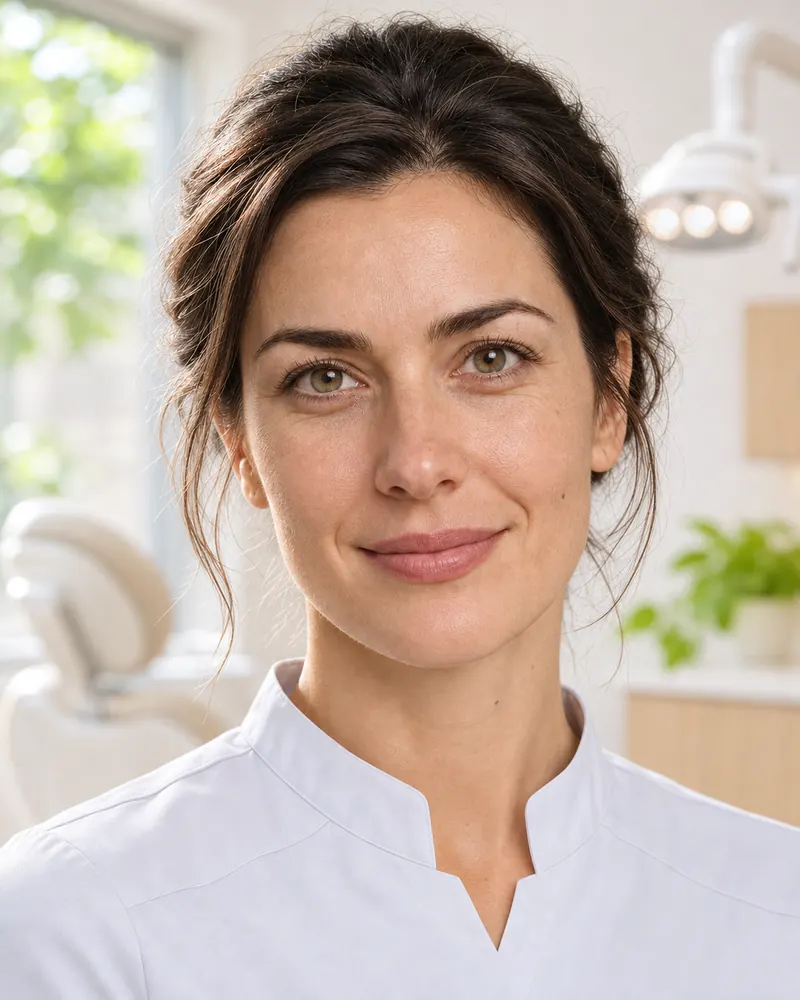

Мария Ильина
Стоматолог-терапевт
Лечит кариес, каналы и пульпит, проводит контроль через полгода.
Записаться к врачуСайт использует cookies и сервис Яндекс Карты: при показе карты Яндекс получает ваш IP‑адрес и cookies. Подробнее — в политике обработки данных.Сайт использует cookies и Яндекс Карты: при показе карты Яндекс получает ваш IP‑адрес и cookies. Подробнее
Лечим кариес, каналы и пульпит под местной анестезией. Большинство случаев — за один визит.

Находим все очаги, а не только тот, что болит.
Чувствуете только прикосновение.
Светоотверждаемый материал, цвет под эмаль.
Имеются противопоказания, необходима консультация специалиста.
Снимок и диагноз за 40 минут.
Письменно, до начала лечения.
Под анестезией, чаще за один визит.
Через полгода, бесплатно.

Лечит кариес, каналы и пульпит, проводит контроль через полгода.
Записаться к врачу